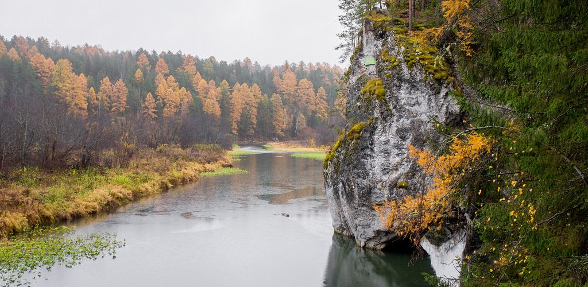
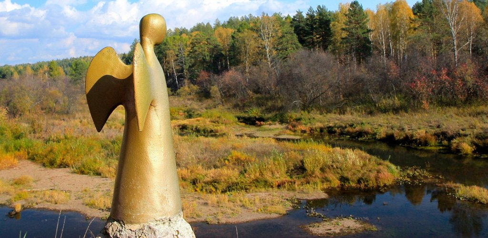
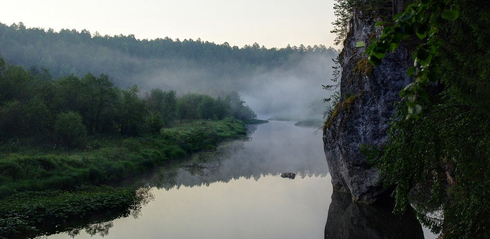
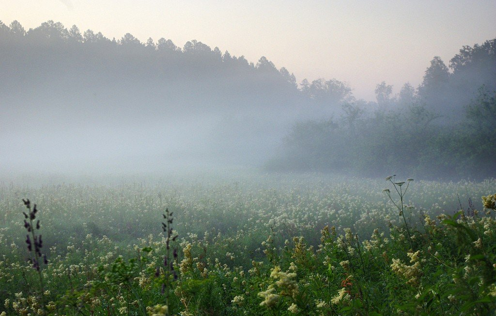
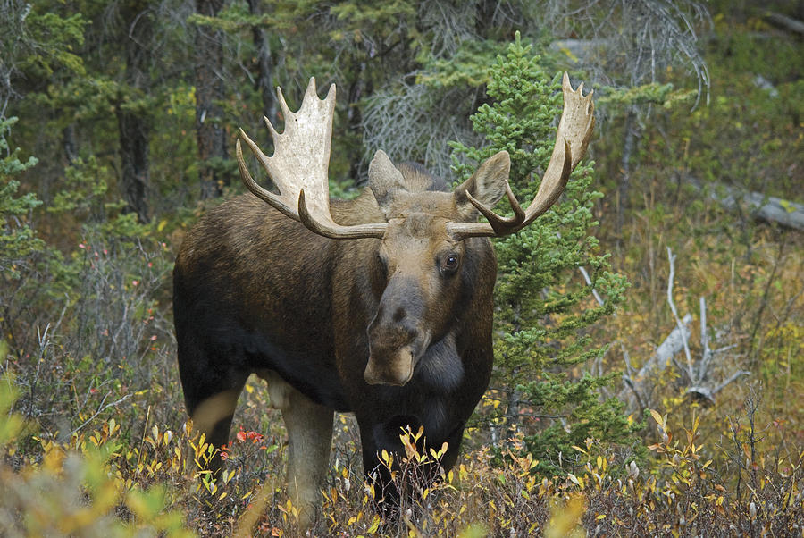

Природный парк "Оленьи Ручьи"
Природный парк «Оленьи Ручьи» расположен в Свердловской области на территории Нижнесергинского муниципального района в 100 км юго-западнее Екатеринбурга. Среди наиболее интересных достопримечательностей парка можно назвать карстовые пещеры Дружба, Аракаевская и Спортивная, скалы Священник, Дыроватый камень, Утопленница, Писанница и Лягушка. Пещера Дружба — самая большая пещера Урала, протяженность ходов которой составляет 500 м. В ней есть подземные ручьи, озера и ледяные образования, сохраняющиеся на протяжении всего года, а также Мраморная галерея — ход, стенки которого состоят из белоснежных доломитов. Неподалеку от пещеры Дружба находится карстовый провал глубиной 50 м. Всего на территории парка расположено более 100 пещер.
Скала Дыроватый камень находится на берегу реки Чусовой. Под воздействием ветра и дождя в ней образовалось множество ходов, гротов и небольших пещер.
Общая информация
| Полное название: |
Природный парк «Оленьи ручьи» |
| Категория МСОП: |
III (природный парк) |
| Дата основания: |
29 октября 1999 года |
| Регион: |
Свердловская область, Нижнесергинский район |
| Площадь: |
12,7 x 103 га |
| Рельеф: |
горный |
| Климат: |
умеренно континентальный |
| Официальный сайт: |
http://olen.ur.ru |
| E-mail: |
olen@olen.ur.ru |

История создания
В долине реки Серги люди жили еще 14000 лет назад, о чем свидетельствуют данные археологических раскопок, проводимых на территории парка.
Толчком к организации природного парка «Оленьи ручьи» стала вышедшая в 1973 году монография Василия Ивановича Прокаева «Краткая физико-географическая характеристика юго-запада Среднего Урала и некоторые вопросы охраны этой территории». Вопрос об организации охранной территории поднимался с 1975 года, однако по различным причинам окончательное решение откладывалось. Только в 1999 году указом губернатора Свердловской области был учрежден природный парк «Оленьи ручьи».
В семи уголках Земли: в Австралии, Канаде, Перу, Мали, Вануату, на Гавайях, а также на Урале в природном парке «Оленьи ручьи» 17 сентября 2005 года установлено семь «Ангелов единой надежды». По замыслу шведской художницы и скульптора Лены Эдвалл они должны стоять на страже мира и спокойствия Земли.

Растительный мир
В парке находится граница двух природных зон: лесостепи и горной тайги. Здесь произрастает 378 видов высших сосудистых растений. Парк отличает уникальный тип антропогенного ландшафта — парковые лиственничники. Наиболее часто встречаются зверобой продырявленный (Hypericum perforatum), горец змеиный (Bistorta major), дягиль лекарственный (Potentilla erectа), таволга вязолистная (Filipendula ulmaria) и др.

Тот, кто хоть однажды пробовал чай из зверобоя, наверняка навсегда запомнил густой насыщенный вкус. Есть у этого растения и другие народные названия: заячья кровь, зверобойник, красная травица, кровавец, кровца, хворобой и прочие. Известны антисептические и антимикробные средства зверобоя. В древности его называли травой от ста болезней.
Здесь же произрастают ядовитая чемерица Лобеля (Veratrum lobelianum), а также лапчатка прямостоячая (Potentilla erecta). У самой воды располагаются густые заросли ивы (Salix sp.) и ольхи (Alnus sp.), перевитые хмелем. На суходольных лугах обильно растет душица обыкновенная (Origanum vulgare).
Эфирное масло душицы содержит высокую концентрацию карвакрола и является более мощным антибиотиком и антигистаминным средством, чем многие лекарства, однако при ее применении следует быть осторожным. Все лекарственные растения в той или иной мере ядовиты.

Животный мир
Здесь обитают лоси, благородные олени, косули, дикие кабаны, лесные хорьки и другие виды животных. На реке и притоках обычны речные бобры, строящие здесь свои плотины. На скалах гнездится сокол-сапсан. Здесь встречаются филины, неясыти обыкновенные, воробьиные сычики, рябчики, тетерева, глухари. В парке обитают три вида дятлов: большой пестрый, седой и черный. Одним из интереснейших видов считается черный дятел, или желна. Он отличается от своих сородичей крупными размерами, смолянисто-черным цветом оперения и ярко-красной шапкой на голове.

Как добраться
Расстояние от Екатеринбурга до природного парка «Оленьи ручьи» составляет 120 км. Можно доехать поездом до станции «Дружинино», затем пригородным поездом Дружинино — Михайловский завод, который ходит два раза в сутки, — до остановки «Бажуково». Время в пути составит около 4 часов. Можно доехать пригородным автобусом до Михайловска, Арти, Урмикеево, Тюльгаша. Билет необходимо брать до остановки «Природный парк „Оленьи ручьи"». Время в пути составит около 2,5 часов. Далее 2 км — пеший маршрут. Удобно добираться личным автотранспортом, тем более что на въезде в парк есть автостоянка.